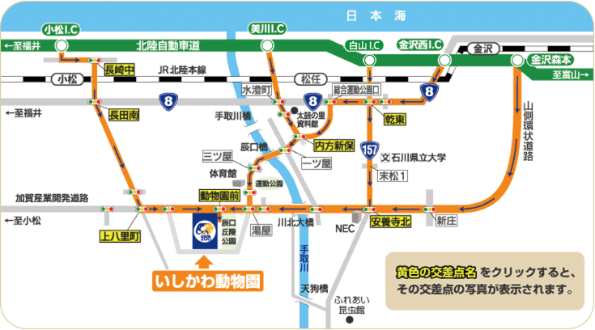
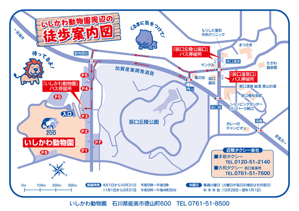

アクセス
access
アクセスマップ
住所:〒923-1222 石川県能美市徳山町600番地
車での来園

北陸自動車道からお越しの場合
| 金沢森本ICから | 約60分（約30km） |
|---|---|
| 金沢西ICから | 約40分（約16km） |
| 美川ICから | 約20分（約13km） |
| 能美根上スマートICから | 約20分（約11km） |
| 小松ICから | 約20分（約12km） |
駐車場のご案内
| 普通車 | 1,300台 | バス | 19台 |
|---|
バスでのご来園
| 金沢駅から | 北陸鉄道バス、「金沢駅東口10番のりば」より「辰口和光台」「いしかわ動物園」ゆきにて約60 分 「いしかわ動物園」下車すぐ |
|---|---|
| 小松駅から | 北陸鉄道バス（佐野線）、「小松駅2番のりば」より「いしかわ動物園」ゆきにて（土・日・祝のみ運行）約40 分 「いしかわ動物園」下車すぐ |
| 松任駅から | 北陸鉄道バス（川北線）、「いしかわ動物園」ゆきにて（平日のみ運行）約35 分 「いしかわ動物園」下車すぐ |
| 能美根上駅から | のみバス、約27分 「いしかわ動物園」下車すぐ |
2名以上のバス利用でお得に来園
北陸鉄道バスをご利用の際に当園で2名以上で乗降されると、おとな運賃が半額となります（のみバスは対象外）。
※現金利用のみ適用されます。
※その他の割引との併用はできません。
詳しくは、下記の「北陸鉄道テレホンサービスセンター」あるいは「北陸鉄道株式会社ホームページ」からご確認ください。
【バスについてのお問い合わせ】
※最新のバス発着時刻は下記にてお問合せくださいませ。
北陸鉄道テレホンサービスセンター TEL.076-237-5115
北陸鉄道株式会社ホームページはこちらから
のみバス（能美市地域振興課） TEL.0761-58-2212